본문
5-4. 원 위의 위치와 좌표 회전을 표현한다
반지름이 r인 원 위에서 각도 θ만큼 이동한 점의 좌표는 (r cos θ, r sin θ)입니다. cos가 가로 좌표를, sin이 세로 좌표를 담당합니다.
점 (x,y) 자체를 원점 기준으로 θ만큼 회전시키면 다음 회전 공식을 사용합니다.

(1,0)은 오른쪽 방향입니다. 반시계 방향으로 90° 회전하면 위쪽 방향인 (0,1)이 됩니다. 사인과 코사인이 회전 전후의 좌표를 계산합니다.
예를 들어 점 (1,0)을 반시계 방향으로 90° 회전시키면 cos 90°=0, sin 90°=1이므로 결과는 (0,1)입니다. 이 계산은 게임, 로봇 관절, 2D·3D 그래픽과 좌표계 변환의 기초입니다.
5-5. 반복되는 변화와 파동을 표현한다
점이 원 위를 일정한 속도로 계속 회전한다고 생각해 봅시다. 점의 세로 좌표만 시간 순서대로 기록하면 0 → 1 → 0 → -1 → 0의 변화가 반복됩니다. 이것이 사인파의 출발점입니다.
물결 모양은 점이 실제로 이동한 길이 아니다
점의 실제 이동 경로는 원입니다. 사인 그래프는 그 경로를 그대로 그린 것이 아니라, 점이 회전하는 동안의 세로 높이만 시간 또는 각도 순서대로 기록한 그래프입니다.
원의 좌표 그림
가로축은 점의 실제 x 위치이고 세로축은 점의 실제 y 위치입니다. 점은 원 모양의 경로를 따라 움직입니다.
사인 그래프
가로축은 실제 공간의 x 위치가 아니라 시간 t 또는 회전 각도 θ입니다. 세로축에 그 순간의 높이 y를 기록합니다.
왼쪽 점은 원을 따라 움직입니다. 오른쪽에서는 각 순간의 세로 높이를 각도 순서대로 오른쪽에 찍습니다. 점들을 촘촘히 기록해 연결하면 물결 모양이 됩니다.
| 회전 각도 | 원 위의 좌표 | 사인 그래프에 찍는 점 |
|---|---|---|
| 0° | (1, 0) | (0°, 0) |
| 90° | (0, 1) | (90°, 1) |
| 180° | (-1, 0) | (180°, 0) |
| 270° | (0, -1) | (270°, -1) |
| 360° | (1, 0) | (360°, 0) |
실제로는 점이 0° → 90°로 한 번에 이동하지 않습니다. 1°, 2°, 3° ...처럼 모든 중간 각도를 지나며 높이도 연속적으로 변합니다. 이 값을 촘촘하게 찍고 이어서 부드러운 곡선이 만들어집니다.
반지름 r은 계속 유지되며 사인파가 위아래로 움직이는 최대 크기, 즉 진폭이 됩니다. r=1이면 높이는 -1과 1 사이에서 움직입니다. 회전 속도 ω가 일정해야 시간축에서 일정한 간격으로 반복되는 사인파가 됩니다.
사인값은 무한히 커지지 않고 -1과 1 사이를 오갑니다. 한 번의 모양이 끝나면 같은 변화가 다시 시작되며, 이 반복 길이를 주기라고 합니다.
같은 원운동에서 코사인 그래프는 어떻게 나올까?
사인 그래프는 점의 세로 좌표를 기록했습니다. 코사인 그래프는 같은 점의 가로 좌표를 시간 또는 각도 순서대로 기록합니다. 점은 오른쪽 끝 (1,0)에서 출발하므로 코사인값은 처음부터 1입니다.
| 회전 각도 | 원 위의 좌표 | 기록하는 가로 좌표 | 코사인 그래프의 점 |
|---|---|---|---|
| 0° | (1, 0) | x=1 | (0°, 1) |
| 90° | (0, 1) | x=0 | (90°, 0) |
| 180° | (-1, 0) | x=-1 | (180°, -1) |
| 270° | (0, -1) | x=0 | (270°, 0) |
| 360° | (1, 0) | x=1 | (360°, 1) |
왼쪽 점은 사인 때와 똑같이 원을 돕니다. 이번에는 세로 높이가 아니라 가로 위치 x를 오른쪽에 기록하므로 1 → 0 → -1 → 0 → 1의 코사인 그래프가 됩니다.
왜 cos 0°=1이고 cos 90°=0일까?
단위원에서는 빗변에 해당하는 원의 반지름이 항상 1입니다. 코사인은 인접변/빗변이고, 단위원에서 인접변은 점의 가로 위치 x에 해당합니다.
0°일 때
점은 원의 오른쪽 끝 (1,0)에 있습니다.
빗변은 1, 가로 길이도 1이므로:cos 0°=1/1=1
90°일 때
점은 원의 위쪽 끝 (0,1)에 있습니다.
빗변은 1, 가로 길이는 0이므로:cos 90°=0/1=0
180°부터는 ‘길이’보다 ‘좌표’로 생각한다
180°의 점은 원의 왼쪽 끝 (-1,0)이므로 cos 180°=-1입니다. 실제 삼각형의 변 길이가 음수라는 뜻이 아니라, 가로 좌표가 원점의 왼쪽 방향이라서 -1이라는 뜻입니다. 그래서 모든 각도에서는 cos θ=가로 좌표, sin θ=세로 좌표로 이해하는 것이 정확합니다.
사인은 0에서 시작하고 코사인은 1에서 시작합니다. 같은 회전을 서로 다른 방향에서 기록한 것이므로, 코사인은 사인보다 90° 앞서 시작한 같은 모양의 파동으로 볼 수 있습니다.
소리, 물결, 용수철의 진동, 교류 전압처럼 반복되는 현상을 수학적으로 표현할 때 사용합니다. 복잡한 신호도 서로 다른 진폭과 주파수를 가진 여러 사인·코사인 파동의 합으로 분석할 수 있는데, 이것이 푸리에 해석의 핵심 아이디어입니다.